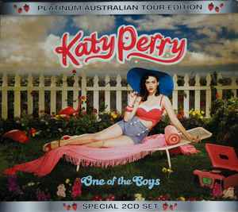

|  | One of the Boys (2008) |
Novelty or not? That was the question people asked of Katy Perry during her breakthrough. “I Kissed A Girl” is the sort of song that, while almost guaranteed to be a sure-fire smash, might also overshadow an artist who had plenty more to offer. The new-wave-influenced co-write (with hitmakers Max Martin, Cathy Dennis, and Katy’s producer, Dr. Luke) seduced the international charts with consummate ease, topping Billboard’s US Hot 100 listings and scaling similar peaks in key markets such as the UK and Germany. But we all know how tough following such a monster debut can be… And as the lead single for Katy’s second studio album, One Of The Boys, it was a controversial springboard for the star. |
| Teenage Dream (2010) |
Teenage Dream is the third studio album by American singer Katy Perry. It was released on August 24, 2010, through Capitol Records. Primarily a pop record, Teenage Dream also contains elements of disco, electronic, rock, funk, house, Hi-NRG, and hip hop, that revolve around young love, partying, self-empowerment, and personal growth. Perry co-wrote the album, and worked with a number of producers such as Dr. Luke, Max Martin, Benny Blanco, Stargate and Greg Wells. |  |
PRISM (2013) |
Prism is the fourth studio album by American singer Katy Perry. It was released by Capitol Records on October 18, 2013. While the album was initially planned to be "darker" than her previous material, Prism ultimately became a prominently dance-inspired record. Perry worked with several past collaborators, while enlisting new producers and guest vocals. Much of Prism revolves around the themes of living in the present, relationships, and self-empowerment. The album garnered generally positive reviews with critics praising its lyrics for being more "mature" and personal, while others considered Prism to be more formulaic than her previous material. |
 |
Witness (2017) |
Witness is the fifth studio album by American singer Katy Perry. It was released on June 9, 2017, by Capitol Records. For the album, Perry worked with numerous producers, including Jeff Bhasker, Mark Crew, Duke Dumont, Jack Garratt, Oscar Holter, Illangelo, Ilya, Max Martin, Ali Payami and Shellback. Witness is an electropop album that delves into dance and EDM genres, with lyrics on self-empowerment and feminism. Perry described it as an album of "liberation" and "purposeful pop". |
 |
Smile (2020) |
Smile is the sixth studio album by American singer Katy Perry. It was released on August 28, 2020, by Capitol Records, three years after its predecessor Witness (2017). Perry worked with various producers on the album, such as Josh Abraham, Carolina Liar, the Daylights, G Koop, Andrew Goldstein, Oligee, Oscar Görres, Oscar Holter, Ilya, Ian Kirkpatrick, the Monsters & Strangerz, Charlie Puth, Stargate and Zedd. She described Smile as her "journey towards the light, with stories of resilience, hope, and love". Primarily a pop record, Smile is characterized by themes of self-help and empowerment. |